Início / Produtos
Nossos produtos
Muito além do gelato: café da manhã, tarde ou sobremesa depois do jantar.

01
Mais de 45 sabores artesanaisGelatos
Feitos todos os dias na técnica italiana, dos clássicos às criações da casa.
Ver saboresGaleria
Sabores da vitrine
Feitos à mão todos os dias, com ingredientes selecionados.
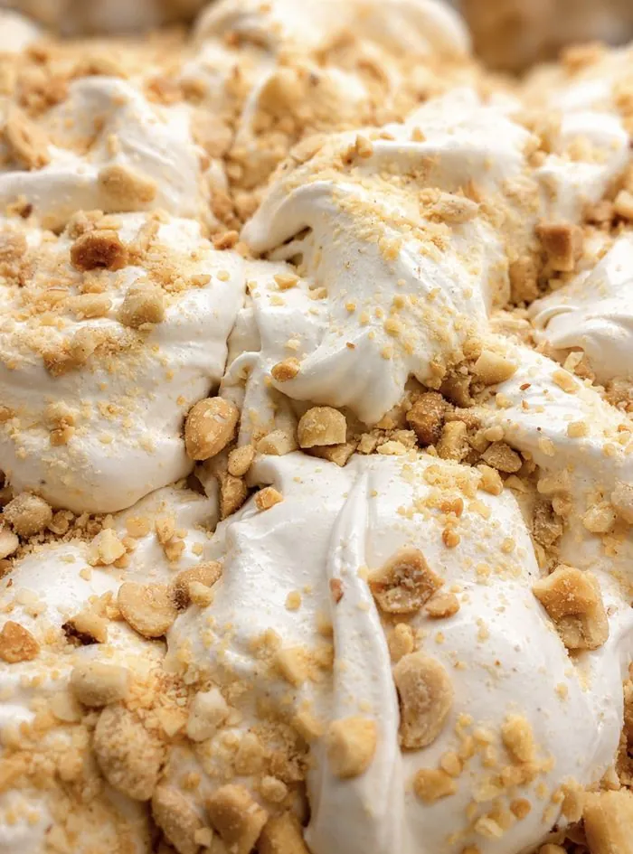
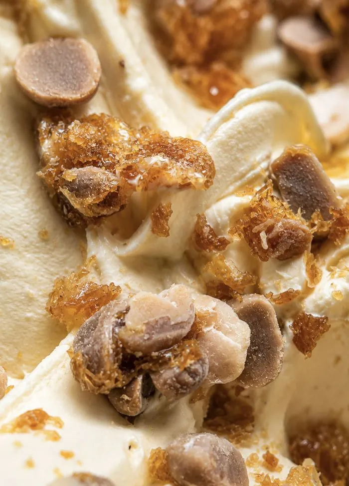
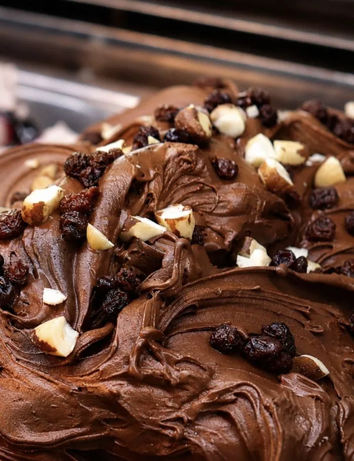
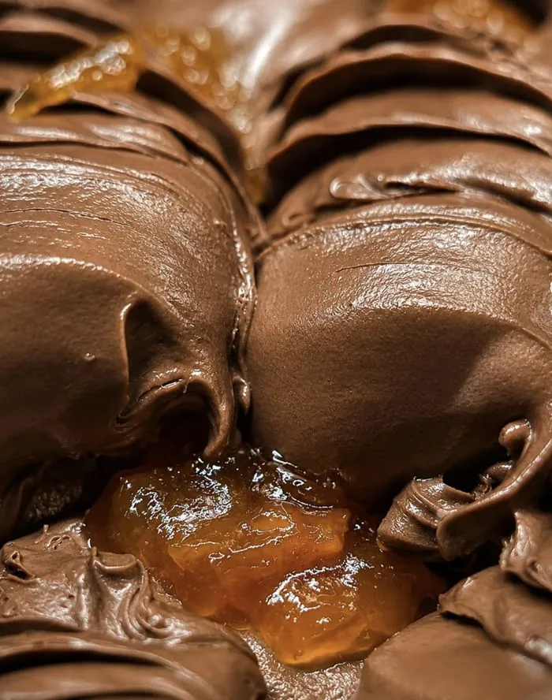


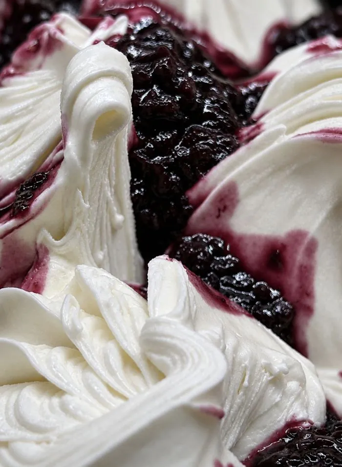
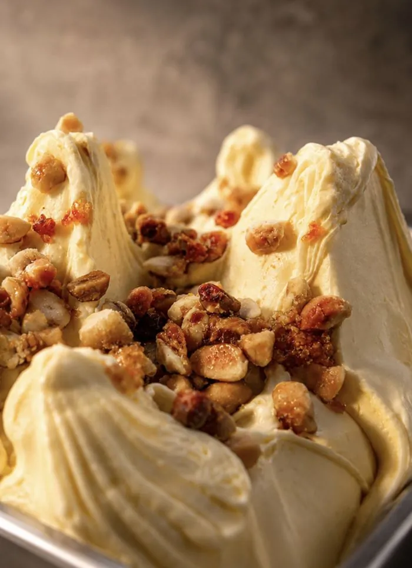

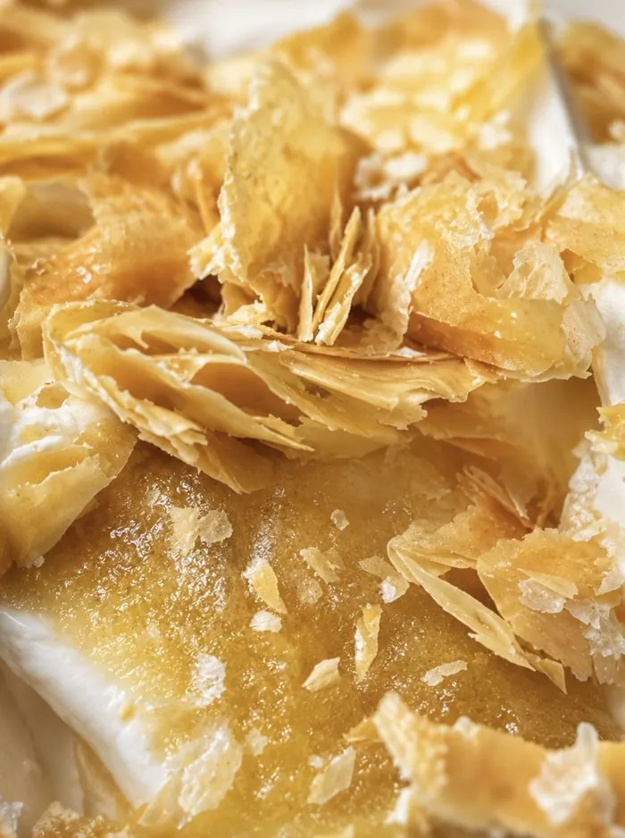
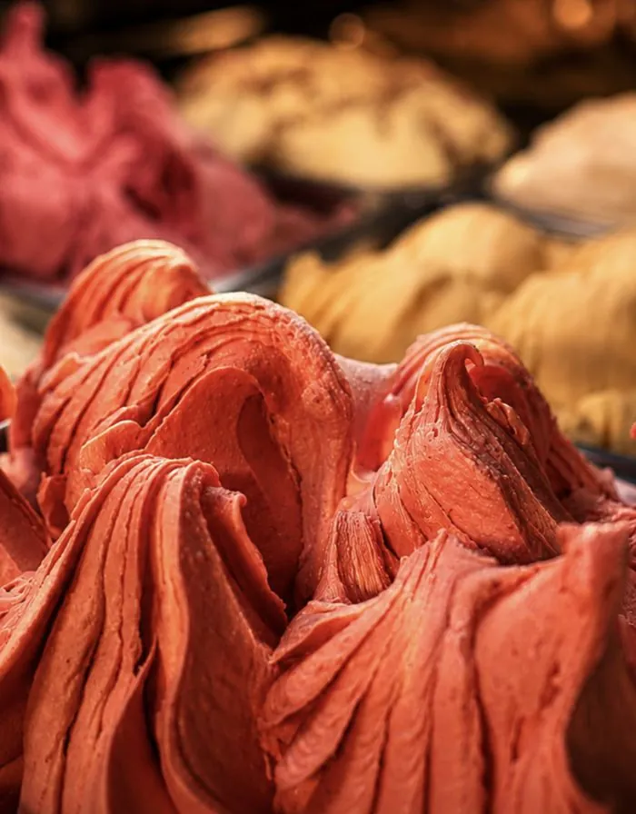
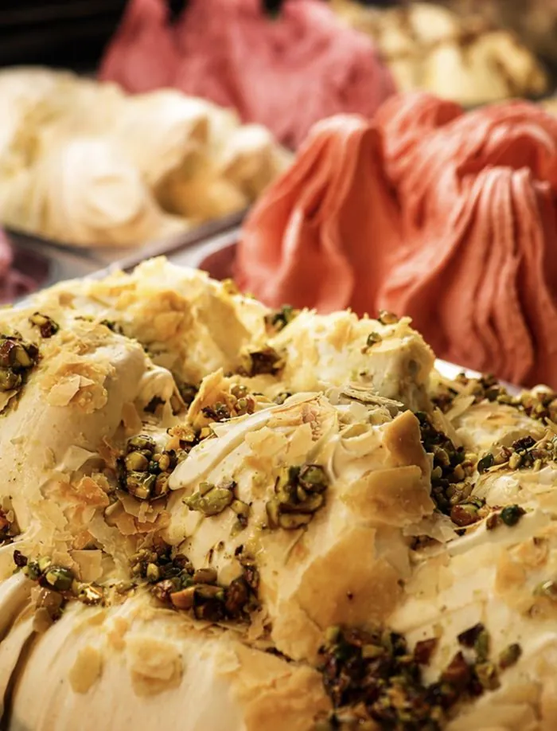
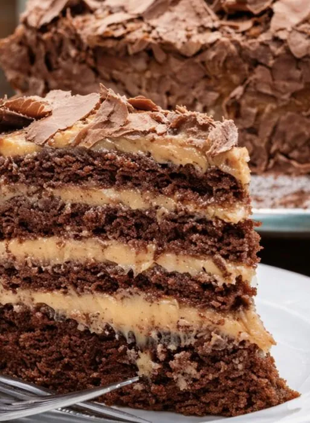
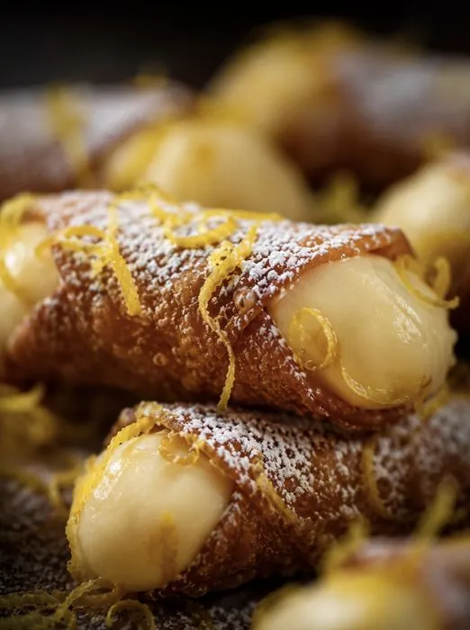
03
Doces italianosDoces
Cannoli, brigadeiros e doces finos para acompanhar o gelato.
Encontrar uma loja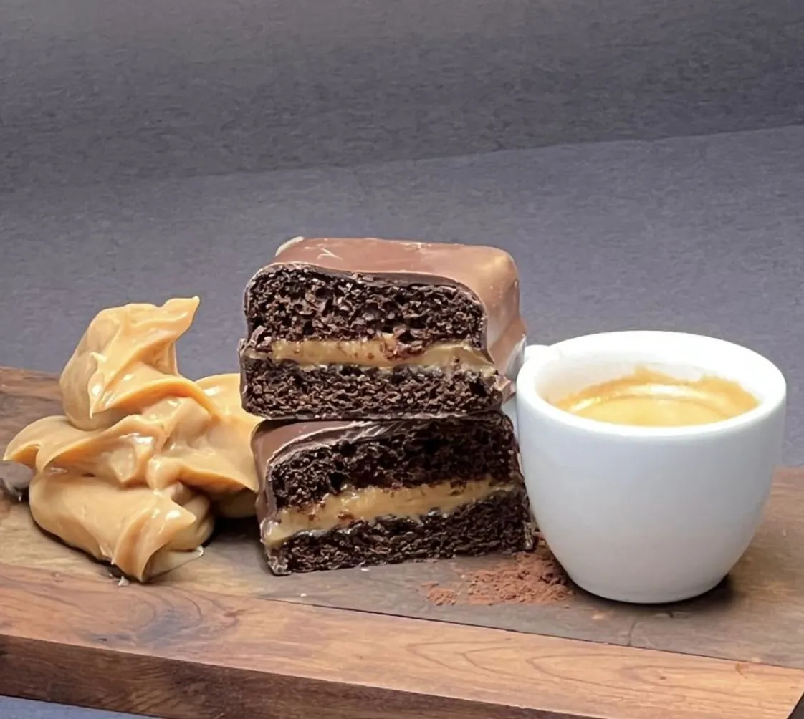
04
Espresso de verdadeCafés
Espresso, cappuccino e bebidas quentes para uma pausa completa.
Encontrar uma loja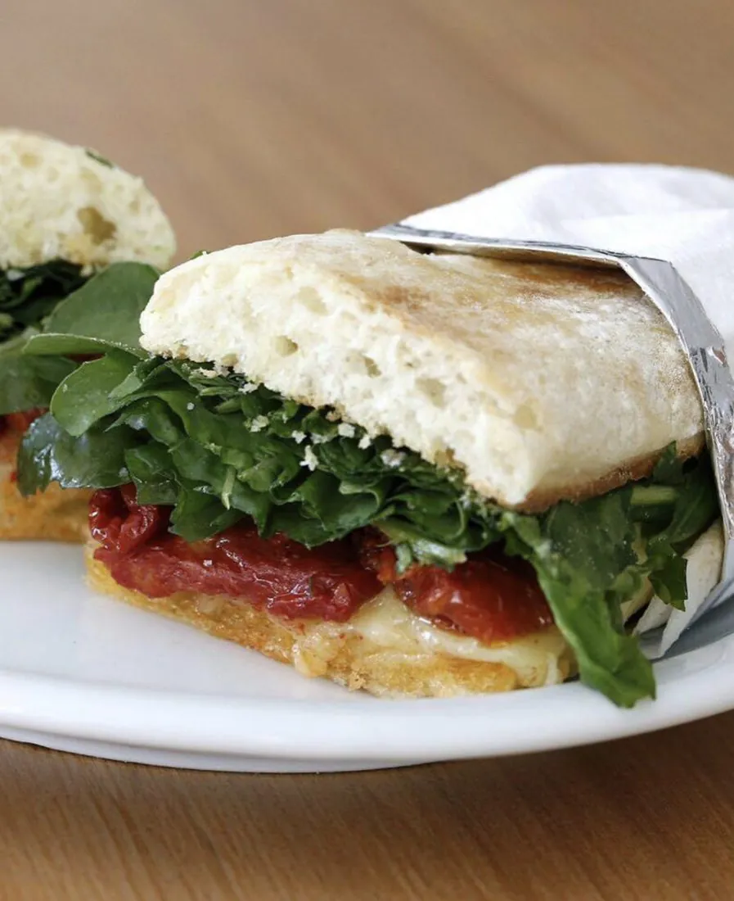

06
O sabor em casaPara levar
Potes de gelato para a sobremesa de domingo ou para ter sempre no congelador.
Escolher a lojaStuppendo Gelateria
Uma pausa estupenda espera por você
Oito lojas abertas em São Paulo, Rio de Janeiro, Mato Grosso do Sul e Paraná.
Encontrar uma loja